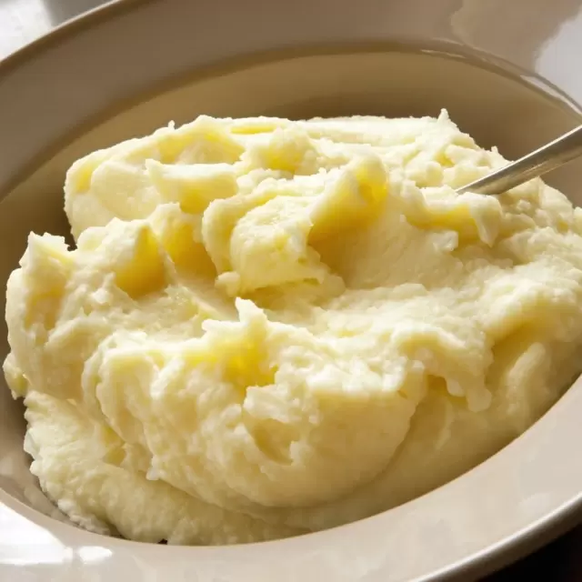

Pure de Papas

Description
Ingredientes
- Base de pure de papas(en caja)(Smashed potatoes base)
- Leche entera(Pure milk)
- Mantequilla(Butter)
- Merken(Opcional)
Pasos
- En una olla depositar los ingredientes y revolver hasta que este homogeneo
- (Opcional) Luego de que este homogenea la preparacion agregar Merken a gusto